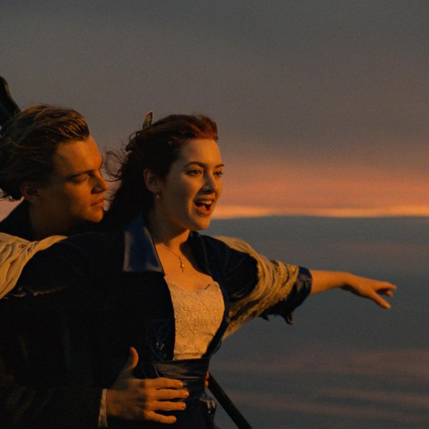

The Reviews
-
Sesame Street

A review by one of us.
-
Superbad
A hilarious coming of age story about two friends.
-
Palm Springs
Feels very relevant to today's Pandemic era. It really exceeds at what it's trying to do: an inventive new take on Groundhog Day. It has very likable lead performances, and its certainly not your run-of-the-mill rom-com.
-
Blazing Saddles
Classic Mel Brooks comedy, a little non PC for today.
-
Titanic
 a classic. One of DiCaprio's best.
-
Interstellar
An amazing visual masterpiece
-
Blow-Up
24 hours in the life of a glamorous fashion photographer named Thomas, film is based on Julio Cortázar story “Las babas del diablo”.
-
Requiem for a Dream
parallel stories about relationships
-
LOVE ACTUALLY
BEST LOVE/CHRISTMAS MOVIE EVER
-
Back to the Future
Who doesn’t love skateboards and time travel? Marty McFly sure wins us over with his cool guy aesthetic, his “too damn loud” guitar skills and his hilarious love triangle between himself, his mum and his dad.
-
Star Wars
It's got spaceships!
-
Fight club
The most frankly and cheerfully fascist big-star movie since “Death Wish,” a celebration of violence in which the heroes write themselves a license to drink, smoke, screw and beat one another up.
-
The Holiday
It gives me this festive feeling :christmas_tree:
-
The Avengers (1961 television programme)
only english tv show in france for many years